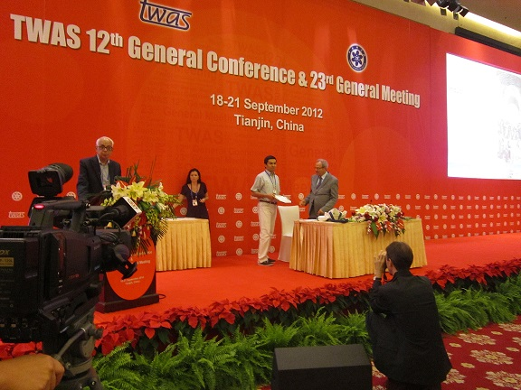

Honors, Awards, and
Grants
Honors and Awards
-
Featured in the "I
benefited from a Marie Curie Action - IOF in the spotlight" section of
the Marie Curie Alumni Association Newsletter No. 6 in May, 2015.
-
Complimentary/Supporting Membership to New York Academy of Sciences, 2015 - 2016.
- Research Fellow at
SAMSI, 2013-2014.
- Funding (Travel + accommodation) Support
for the 4th International Conference of Young Scientists and Annual General
Meeting of the Global Young Academy, Santiago, Chile, 21-25 May 2014.
-
Featured in the "Statistician
Job of the Week" section of
www.statistics2013.org as part of International Year of Statistics in
the week of October 17, 2013.
- Election to
Global Young Academy, 2013-2018
(currently Alumni Member of GYA).
-

- TWAS (The Academy of Sciences for the
Developing World) Young Affiliate Fellow, 2012 - 2016.
- Elected Member of ISI (International
Statistical Institute), 2011 November - Present.
- The article titled "Extension of
one-dimensional proximity regions to higher dimensions. Computational
Geometry: Theory and Applications, 43(9):721-748" is featured at The
Vertical News (http://www.verticalnews.com/premium_newsletters/Journal-of-Technology-and-Science/2010-10-10/63483JTS.html
)
- Listed in the Marquis Who's Who in the World,
28-33rd editions (2010-2016).
- Second Best Oral Presentation Award at the 30th National Radiology Congress,
Antalya, Turkey, November 4-9, 2009.
- European Science Foundation (ESF) scholarship for the IASC-ERS Summer school
"Computational Aspects in Environmental Statistics", Pamporovo, Bulgaria, 2009.
- Funding (Travel + accommodation)
Support for the -> 57th Session of the International Statistical Institute,
Durban, South Africa, 2009; -> 59thWorld Statistics Congress, Hong Kong,
China, 2013; -> 61stWorld Statistics Congress, Rio de Janeiro, Brazil, 2015.
-
Member,
Phi Kappa Phi Honor Society, 1999 -
Present.
-
Abel Wolman Fellowship, Johns
Hopkins University, 2000 - 2001.
Grants
and External Funding
- Simons Collaboration Grant ($42,000) 2021 - 2026.
- NSF Award DMS-1638521, "Statistical and Applied Mathematical Sciences
Institute - SAMSI", $3,097,333 per year for three years, September 1, 2017
to August 31, 2020. (EC was a co-PI of the grant and Deputy Director of
SAMSI through 05/15/2019.)
-
EU-FP7
Marie Curie International Outgoing Fellowship (€233,921
for two years, July 2013-July 2015).
- TUBİTAK
1001 Grant, July 2012- July 2013.
- TUBİTAK (Turkish Scientific and
Technological Research Council) Kariyer Grant, February 2008 ---
February 2011.